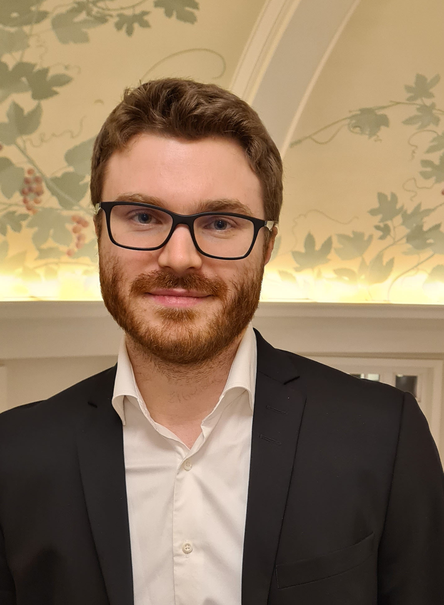

Frederik Hartmann
Welcome to my website!
I am Assistant Professor of Computational Linguistics at the University of North Texas and Director of AI Engineering at AltaScient.
My linguistic research interests concern linguistic change and its cognitive foundation, Germanic/Indo-European historical linguistics, and language family diversification. My work involves developing causal models of (Bayesian inference, Neural Networks, and Agent-Based Models) language processes as complex systems.
In my work in industry, I develop AI strategies and build custom AI models with language capabilities for the analysis of large-scale economic data.
Fields of study
- Diachronic linguistics
- Cladistics/Phylogenetics
- Artificial Neural Networks
- Agent-based modeling
- Bayesian inference
- Early Germanic